Settings#
Bounce#
Select the bouncing behavior.
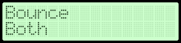Steps per Revolution#
Select number of steps per revolution.
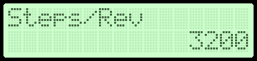Units per Revolution#
Select amount of linear travel per revolution.
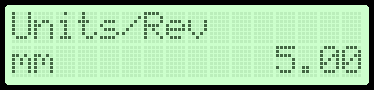Maximum Speed#
Select maximum linear velocity. The maximum allowable linear speed is bounded by the maximum pulse generation frequency.
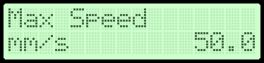Acceleration#
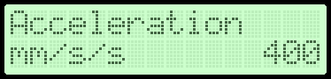Backlash#
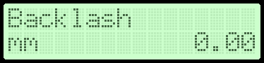Backlash Speed#
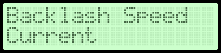Homing Speed#
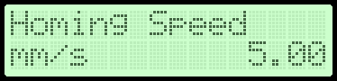Homing Direction#
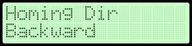Backoff Distance#
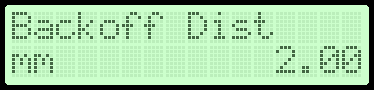Position Max#
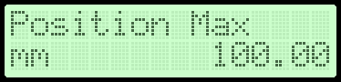Enable Pin#
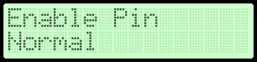Direction Pin#
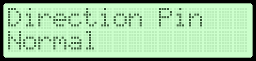Limit Pin#
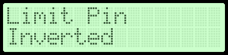Units#
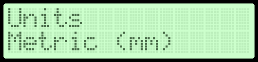Load Defaults#